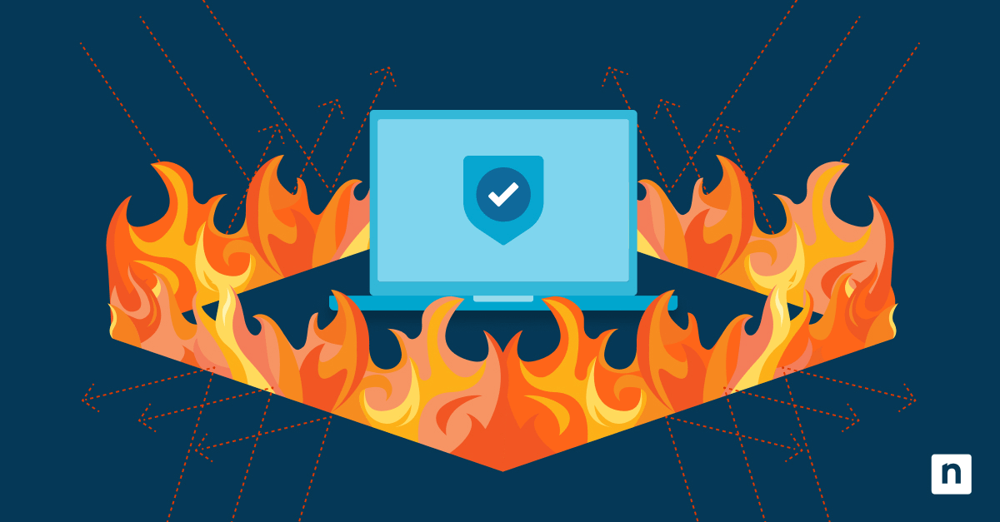

Trabajo Individual: El estudiante debe revisar los contenidos propuestos en la Unidad 3 del curso,
una vez se ha realizado la lectura individual de los contenidos propuestos, el
estudiante debe seleccionar uno de los temas de la lista e informar en el foro
que tema a seleccionando para evitar que se repitan temas entre estudiantes.
El estudiante creará un blog o página web en cualquier espacio gratuito de
Internet y compartirá el link respectivo en el foro trabajo colaborativo donde
expondrá el tema propuesto a continuación con varios ejemplos de aplicación:
La seguridad de redes es un campo crucial en la informática y las telecomunicaciones, enfocado en proteger la integridad, confidencialidad y disponibilidad de la información a medida que se transmite o almacena en las redes. Los sistemas defensivos son las herramientas y estrategias empleadas para proteger las redes contra amenazas y ataques.
La seguridad de redes es esencial para proteger la información en un mundo cada vez más digitalizado.
Los sistemas defensivos como firewalls, IDS/IPS, VPNs, cifrado de datos, control de acceso a la red y autenticación multifactor son herramientas clave que ayudan a mantener la integridad, confidencialidad y disponibilidad de los datos. Implementar estas medidas de seguridad no solo protege la información, sino que también asegura la continuidad del negocio y la confianza de los clientes.